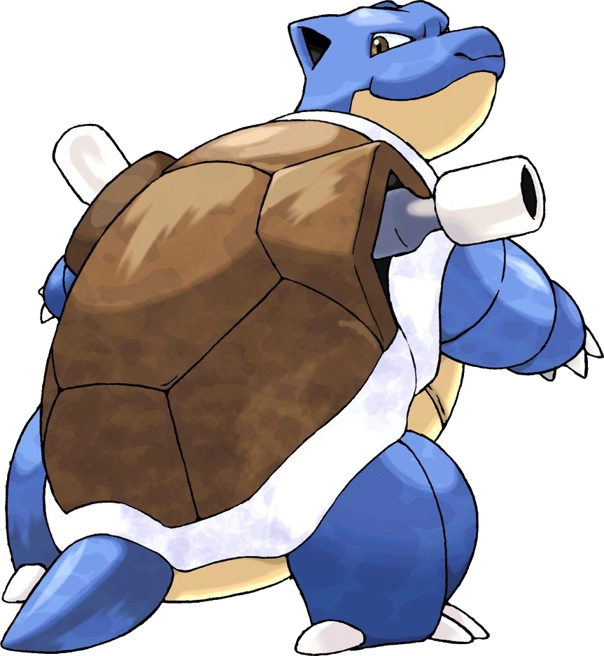
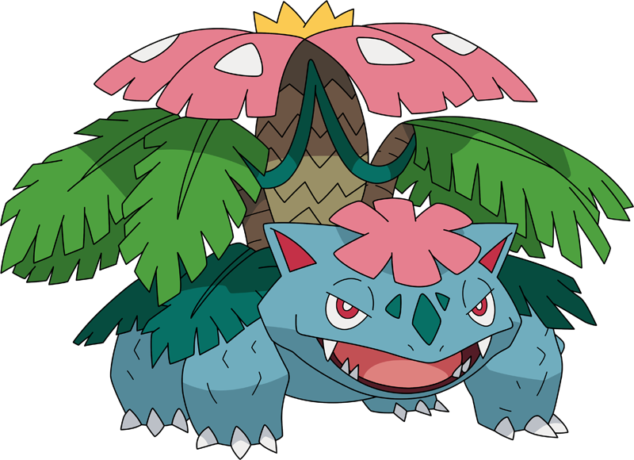

-
Blastoise
HP 830
Descrição
Blastoise tem bicos de água que se projetam de sua concha. Os bicos de água são muito precisos. Eles podem disparar balas de água com precisão suficiente para atingir latas vazias a uma distância de mais de 60 metros, é ligado a Squirtle e Wartortle.
-
Charizard
HP 800

Descrição
Geralmente, um Charizard é competitivo. Ele adora a batalha e seu espírito competitivo também é notável, uma vez que nunca vai cuspir fogo em um inimigo mais fraco a menos que provocado ou ordenado. Quando fica muito irritado, as chamas em sua cauda se tornam branco-azuladas.
-
Mewtwo
HP 1200

Descrição
Mewtwo foi criado geneticamente em um laboratório, sendo um clone do misterioso antigo Pokémon Mew. É uma criatura com uma postura humanóide, mas tem algumas características felinas.
-
Venusaur
HP 900
Descrição
Venusaur é um Pokémon dos tipos Grama e Venenoso introduzido na Primeira Geração. É a evolução de Ivyssauro e a evolução final de Bulbassauro.
Venusaur é um Pokémon anfíbio quadrúpede atarracado com pele irregular e azul-esverdeada. Tem olhos vermelhos pequenos e circulares; um focinho curto e rombudo; e uma boca larga com dois dentes pontiagudos no maxilar superior e quatro no maxilar inferior. -
Pikachu
HP 350

Descrição
Os Pikachus são pequenos roedores de quarenta centímetros e de seis quilogramas, com um corpo redondo, pernas curtas e uma longa cauda, quando macho, a cauda tem um formato de um raio, mas se o Pikachu for fêmea sua cauda ganha um coração na ponta.